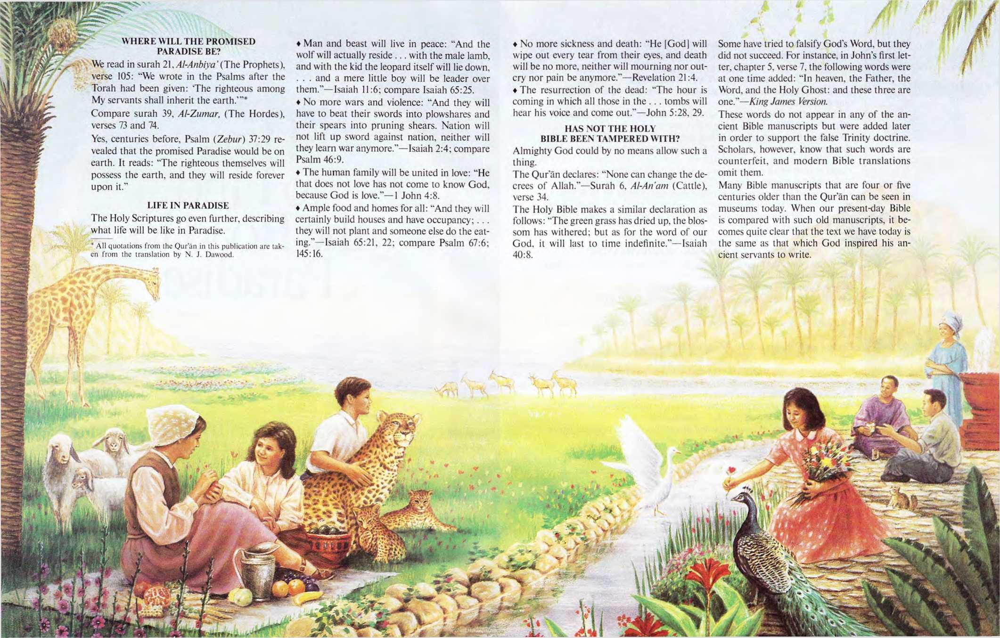

•’I—
How to Find the Road to Paradise
67:6
ing.”—Isaiah 65:21, 22; compare Psalm 145:16.
♦ No more sickness and death: “He |God] will wipe out every tear from their eyes, and death will be no more, neither will mourning nor outcry nor pain be anymore.”—Revelation 21:4.
♦ The resurrection of the dead: “The hour is coming in which all those in the . . . tombs will hear his voice and come out.”—John 5:28, 29,
♦ Man and beast will live in peace: “And the wolf will actually reside ... with the male lamb, and with the kid the leopard itself will lie down. . . . and a mere little boy will be leader over them.”—Isaiah 11:6; compare Isaiah 65:25.
♦ No more wars and violence: “And they will have to beat their swords into plowshares and their spears into pruning shears. Nation will not lift up sword against nation, neither will they learn war anymore.”—Isaiah 2:4; compare Psalm 46:9.
♦ The human family will be united in love: “He that does not love has not come to know God, because God is love.”—1 John 4:8.
♦ Ample food and homes for all: “And they will certainly build houses and have occupancy;... they will not plant and someone else eat
Some have tried to falsify God's Word, but they did not succeed. For instance, in John's first letter, chapter 5, verse 7, the following words were at one time added: “In heaven, the Father, the Word, and the Holy Ghost: and these three are one.”—King James Version.
These words do not appear in any of the ancient Bible manuscripts but were added later in order to support the false Trinity doctrine. Scholars, however, know that such words are counterfeit, and modern Bible translations omit them.
Many Bible manuscripts that are four or five centuries older than the Qur'an can be seen in museums today. When our present-day Bible is compared with such old manuscripts, it becomes quite clear that the text we have today is the same as that which God inspired his ancient servants to write.
HAS NOT THE HOLY BIBLE BEEN TAMPERED WITH?
Almighty God could by no means allow such a thing.
The Qur'an declares: “None can change the decrees of Allah.”—Surah 6, Al-An'am (Cattle), verse 34.
The Holy Bible makes a similar declaration as follows; “The green grass has dried up, the blossom has withered; but as for the word of our God, it will last to time indefinite."—Isaiah 40:8.
WHERE WILL THE PROMISED PARADISE BE?
We read in surah 21. Al-Anbiya’(The Prophets), verse 105: “We wrote in the Psalms after the Torah had been given: ‘The righteous among My servants shall inherit the earth.’”* Compare surah 39, Al-Zumar, (The Hordes), verses 73 and 74.
Yes, centuries before. Psalm (Zebur) 37:29 revealed that the promised Paradise would be on earth. It reads: “The righteous themselves will possess the earth, and they will reside forever upon it.”
LIFE IN PARADISE
The Holy Scriptures go even further, describing what life will be like in Paradise.
* All quotations from the Qur’an in this publication are taken from the translation by N. J. Dawood.
Compare surah 10, Yunis (Jonah), verse 94: “If you doubt what We have revealed to you, ask those who have read the Scriptures before you."
WHAT YOU SHOULD
KNOW ABOUT THE HOLY BIBLE
♦ God is the only true God. the Almighty, who has no equal.—Deuteronomy 6:4; Isaiah 44:6.
♦ The idea that God married a woman in order to have sons is unthinkable.—Psalm 36:9; Job 38:7; Luke 3:38; Genesis 2:7.
♦ The Holy Bible strongly condemns worship of any person or object (including idols and carved images). God alone must be worshiped.—Matthew 4:10; Leviticus 26:1; Psalm 115:4-8.
♦ God is Lord of all mankind, and his Word was written for all humans, both men and women.—Genesis 22:18; 1 Timothy 2:4; Ephesians 5:33.
♦ Entry into God's promised Paradise does not depend on birth, nationality, or the religion our parents gave us.—Acts 10:34.35; Revelation 7:9.10.
♦ The Holy Bible appeals to reason and rises up against ignorance.—Proverbs 2:3-6; Psalm 119:33, 34.
W E ARE ON THE POINT OF ENTERING GOD'S PARADISE—HOW DO WE KNOW?
Only God knows the future, and in his Word he foretold certain events that would be a sign that Paradise was at hand.
Here are just a few of the events he mentioned:
♦ Wars, earthquakes, pestilences, and famines.—Luke 21:10, 11.
♦ Lawlessness.—Matthew 24:12.
♦ Selfishness, disobedience to parents, religious hypocrisy.—2 Timothy 3: 1-5.
Do you see these prophecies being fulfilled today?
WHAT MUST WE DO IF
WE WANT TO LIVE IN GOD'S PARADISE?
We must come to know the truths of God's Word, for this accurate knowledge is compared to hidden treasures.—Proverbs 2:4.
We must also put into practice what we learn, as the Creator ordains: “This is the way. Walk in it, you people."—Isaiah 30:21.
We would be happy to come back and discuss the Holy Bible with you, using a 32-page brochure entitled Enjoy Life on Earth Forever!
Starving child: Based on WHO photo by \V Culling
> 1990 Watchtower Bible and Tract Society of Pennsylvania. All rights reserved.
Would you welcome more information?
Write Jehovah's Witnesses at the appropriate address below.
AUSTRALIA: Box 280. Ingleburn. NSW 1890. BARBADOS, W.I.: Crusher Site Road. Prospect. BB 24012 St. James. BRITAIN: The Ridgeway. London NW7 1RN. CANADA: P.O. Box 41(M). Georgetown. ON L7G 4Y4. GHANA: PO Box GP 760. Accra. HAWAII: 2055 Kamehameha IV Road. Honolulu. HI 96819. INDIA: Post Box No. 6441, Yelahanka, Bangalore-KAR 560 064. IRELAND: Newcastle. Greystones, Co. Wicklow. JAMAICA: PO Box 103. Old Harbour. KENYA: PO Box 21290, 00505 Nairobi. MALAYSIA: Peti Surat No 580, 75760 Melaka. NIGERIA: P.M.B. 1090. Benin City 300001, Edo State PHILIPPINES: PO Box 2044, 1060 Manila. SOUTH AFRICA: Private Bag X2O67, Krugersdorp. 1740. TRINIDAD AND TOBAGO, REP. OF: Lower Rapsey Street & Laxmi Line. Curepe. UNITED STATES OF AMERICA: 25 Columbia Heights.
Brooklyn, NY 11201-2483. www.watchtower.org
How to Find the Road to Paradise
English (rp E)
Printed in Canada